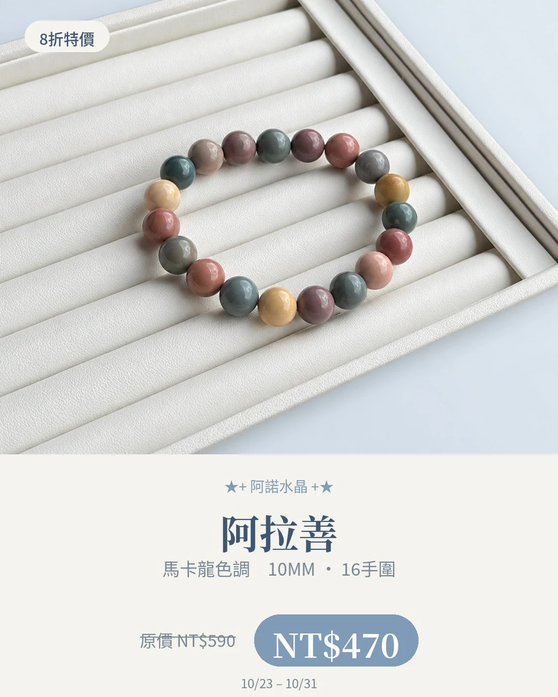
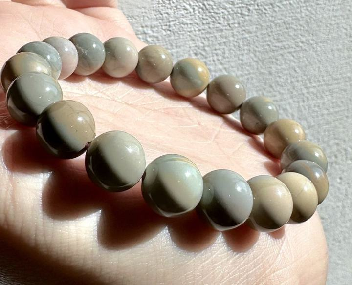

產地與礦物結構
產地背景
商品名稱帶有阿拉善地名，但不能單憑名稱確認這批原料的採礦地。
礦物結構與名稱
「阿拉善」在選物市場常作為石材名稱；本店尚無這款的成分檢測資料，因此不把不同顏色一概寫成同一種礦物結構。
本頁產地是礦種資料中的產出紀錄，不代表照片中商品已完成產地鑑定；原料產地、加工地與販售地是不同資訊。
故事、寓意與日常陪伴
像把不同個性放在同一串裡，不必用單一等級定義美；這款的故事是包容不同色彩，也呈現自己的樣子。
以上為文化寓意或配戴心情，不代表實際功效。
適合怎麼搭配？
奶白、米色、灰綠與棉麻都適合，可挑珠串中的一個顏色呼應衣服。
日常保養
避免撞擊、長時間浸泡及刺激性清潔品，詳細保養依實際材質確認。
看完整保養指南 →官網上的 阿拉善 款式
沿用商品原名稱與照片；售價、庫存及服務依賣場最新資訊確認。

礦石寓意與能量相關內容整理自網路資料，僅供介紹參考，並非科學功效或效果保證。